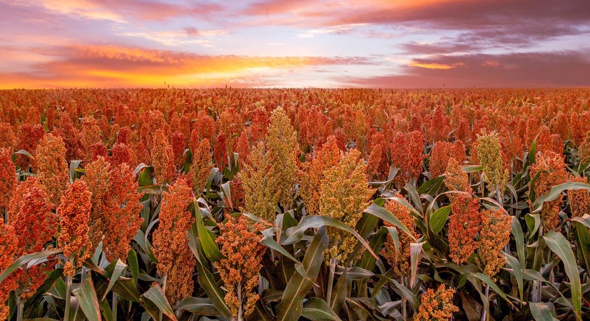

A Importância do Campo para a Cidade
Bem-vindo ao Agrinho 2024! Este ano, destacamos a importância vital do campo para o desenvolvimento e sustento das cidades.
Importância
- Produção de Alimentos: O campo é responsável por fornecer a maioria dos alimentos consumidos nas cidades.
- Recursos Naturais: Áreas rurais fornecem matérias-primas essenciais para diversas indústrias urbanas.
- Equilíbrio Ambiental: A agricultura e florestas rurais desempenham um papel crucial na manutenção do equilíbrio ecológico e climático.
Desafios
- Êxodo Rural: A migração de jovens para as cidades, deixando o campo com menos mão de obra.
- Desvalorização: Menor investimento e valorização das atividades rurais em comparação com as urbanas.
- Infraestrutura: Necessidade de melhorar a infraestrutura rural para sustentar uma produção eficiente e sustentável.

Soluções
Para fortalecer a conexão entre campo e cidade, são necessárias políticas públicas que incentivem o desenvolvimento rural, promovam a sustentabilidade e valorizem os produtores rurais.